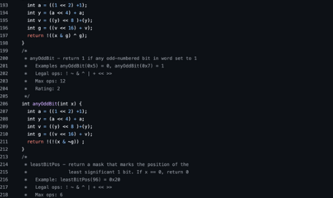
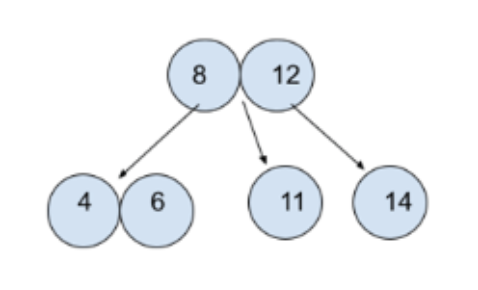

Data Lab
The Data Lab is a lab that is part of Computer Systems. This lab deals with the manipulation of numbers through bit masks, shifting, inverting, and other bitwise operations. There are multiple tasks in this lab that require an understanding of overflow.

Galactic Reconstruction
This project tackles the difficult problem of connecting colonies across the Galaxy with warp gates. These colonies represent nodes and the warp gates represent edges. In this graph, there can only be one point of connection between two colonies, even if that means passing through an auxiliary colony.
